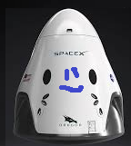

Hyperblog Tu blog de cabecera
Este es el titulo atractivo e interesante del post
Y este es el parrafo de inicio donde vamos a explicar las cosas increibles que se pueden hacer con ramas

Y este es el parráfo de inicio donde vamos a explicar las cosas increíbles que se pueden hacer con ramas
Los blogs son la mejor forma de compartir informacion y tus ideas. Mucho mas que ir a conferencias o salir en youtube. Excepto si eres un rockstar. Pero estadisticamente no lo eres... por ahora
Subscribete y dale like